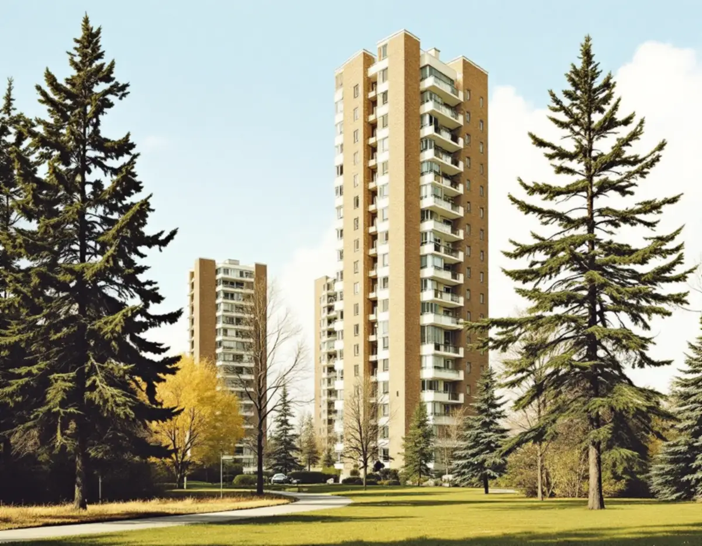
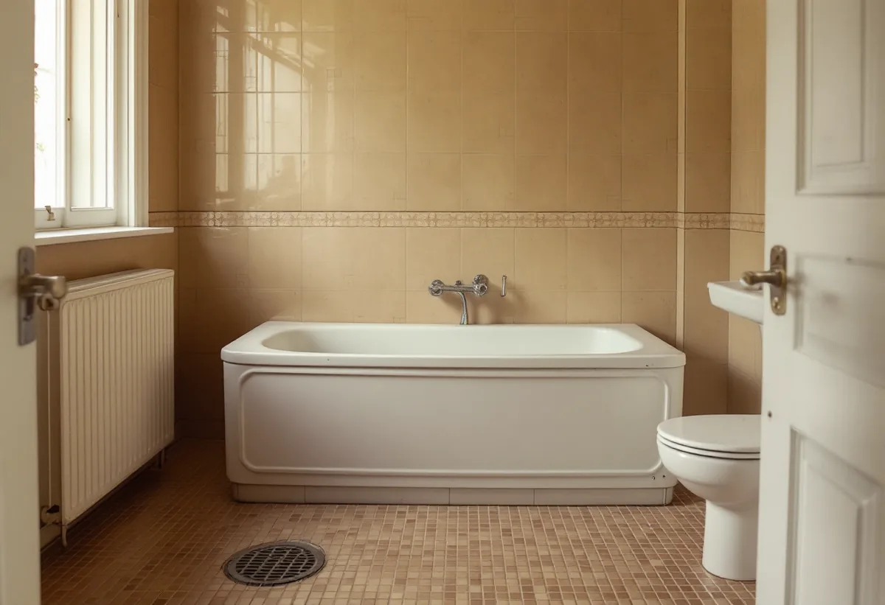

Platsbesök
Vi ser rummet och frågar om husets byggår och tidigare renoveringar.
Farsta har punkthus vid centrum, trevåningshus i Gubbängen, radhus i utkanterna och villor vid Magelungen. Vem som ska tillfrågas om badrummet beror på vad du äger, och husens ålder avgör vad som kan finnas under det gamla kaklet. Geal Entreprenad AB river, bygger tätskikt och ytskikt och samordnar VVS och el, med gratis platsbesök och skriftligt kostnadsförslag.

Farsta byggdes som den första ABC-staden i Söderort, med arbetsplatser, bostäder och centrum. Enligt Stadsmuseets Stockholms Spår om Farsta invigdes centrum i oktober 1960. De 16 våningar höga punkthusen intill centrum syns på långt håll, lägre bebyggelse tar vid längre ut och i stadsdelens utkanter lades flera stora radhusområden.
Gubbängen byggdes ut från 1946, med trevåningshus längs gator som följer terrängen och radhus och småhus på plattare mark i öster, enligt texten om Gubbängen. Vid Magelungen lockade AB Södertörns villastad redan vid sekelskiftet med frisk luft och natur, och Nynäsbanan som öppnade 1901 gjorde det lättare att nå staden.
Stadens områdesfakta för 2025 räknar 31 799 bostäder i stadsdelsområdet: 11 229 i allmännyttan, 6 190 övriga hyresrätter, 10 574 bostadsrätter och 3 806 äganderätter, de sistnämnda alla i småhus.

I en bostadsrätt är det föreningen som ska säga ja först. Enligt bostadsrättslagen 7 kap. 7 § får du inte utan styrelsens tillstånd göra ingrepp i bärande konstruktion, installera eller ändra ledningar för avlopp, värme, gas eller vatten eller ändra ventilationen. Styrelsen får säga nej bara om åtgärden är till påtaglig skada eller olägenhet för föreningen, och den som är missnöjd kan begära att hyresnämnden prövar frågan.
I en hyresrätt får du enligt Stockholms stad normalt inte göra den typen av ändringar som att flytta kök eller badrum, så där är det hyresvärden som bestämmer.
Äger du radhuset eller villan bestämmer du själv, men staden kan behöva en anmälan. Enligt sidan om att flytta kök eller badrum krävs anmälan och startbesked om arbetet ändrar bärande konstruktion eller brandskydd, ändrar ventilationen väsentligt eller kräver en ny VA-stam i ett nytt schakt.
Boverket skriver i sina frågor och svar om asbest att asbest förbjöds inom byggsektorn 1982, men att det är sannolikt att det finns asbest någonstans i en byggnad som uppfördes 1940–1980. Bland exemplen finns kakel- och klinkerfix och fog, socklar i badrum, mattor på vägg och golv och lim under mattor och plattor. Asbesten kan också ha kommit in vid en tidigare renovering och ligga dold bakom golvmattor och kakelplattor. Det enda säkra sättet att veta är provtagning och analys.
Den som yrkesmässigt river eller sanerar asbest behöver enligt Arbetsmiljöverket tillstånd, och ansökan ska göras åtta veckor innan arbetet ska börja. Förarbete, omhändertagande av avfallet och städning räknas också som rivning och sanering. Visar provet asbest rekommenderar vi att ett företag med tillstånd gör rivningen, och tidplanen för badrummet läggs efter det.
Längs Magelungen ligger äldre villor och sommarnöjen. Stadsmuseets text om Farsta strand nämner bland annat grosshandlare B S Elliots gulmålade villa från 1910 och det tidigare Rödkinda barnhem från 1916. I en trävilla kan badrummet vila på ett bjälklag av trä, och det ställer andra krav på underlaget än betongen i ett punkthus.
I ett radhus eller en villa hänger badrummet ihop med golv, väggar och fasad. Mer om husen i stadsdelen finns under golvläggare i Farsta, målare i Farsta och fasadrenovering i Farsta. Hur våtrummet byggs står på sidan om badrumsrenovering.
Vi ser rummet och frågar om husets byggår och tidigare renoveringar.
Kan fix, matta eller lim innehålla asbest tas prov innan rivning.
Styrelsen, hyresvärden eller staden får det underlag som behövs.
Sanering, rivning, tätskikt, VVS och el står som separata poster.
Golvet byggs upp med fall mot brunnen, och tätskiktet läggs efter branschreglerna.
Du får intyg och produktblad att spara.
Rotavdraget är 30 procent av arbetskostnaden, högst 50 000 kr per person och år och högst 75 000 kr tillsammans med rutavdrag. Du ska äga bostaden när arbetet utförs, och material och resor ger inget avdrag.
Skatteverket godkänner att sanera asbest i samband med byggarbete, liksom kakel, klinker och byte av golvbrunn. I en bostadsrätt gäller avdraget arbete inne i lägenheten som du ansvarar för enligt stadgarna. Vi drar avdraget direkt på fakturan.
Om asbest måste saneras, vad som döljer sig under golvet och vilka ytskikt du väljer avgör mest. Du får ett skriftligt kostnadsförslag efter ett gratis platsbesök.
Tätskikt, golvbrunn, el, VVS och intyg.
Badrumsrenovering i Stockholm →Takbyte, takbesiktning och plåtarbeten.
Takläggare i Farsta →Tallkrogens småstugor och villorna vid Magelungen.
Takrenovering i Farsta →Småstugor, kulturmiljö och gränser.
Attefallshus i Farsta →En ny bostad i villan.
Byggföretag i Farsta →Tegel, puts, skivor och trädetaljer.
Fasadmålning i Farsta →Radhus, grupphus och fasadskivor.
Fasadrenovering i Farsta →Småstugor och radhus.
Fönsterbyte i Farsta →Småstugorna i Svedmyra och Sköndal.
Fönsterrenovering i Farsta →Linoleum, plastgolv och klinker i småstugan.
Golvläggare i Farsta →Slipa trägolvet och gå igenom resultatet.
Golvslipning i Farsta →ABC-staden, radhus och villor.
Köksrenovering i Farsta →Småstugor, ädelputs och radhus i Söderort.
Målare i Farsta →Skorstensbeslag och plåttak i Farsta.
Plåtslagare i Farsta →Förråd, gäststuga och skärmtak vid småstugan.
Snickare i Farsta →Radhusen, längan och föreningen.
Takbyte i Farsta →Tapet i 1960-talets lägenheter.
Tapetsering i Farsta →Småstugorna och typritningarna.
Totalrenovering i Farsta →